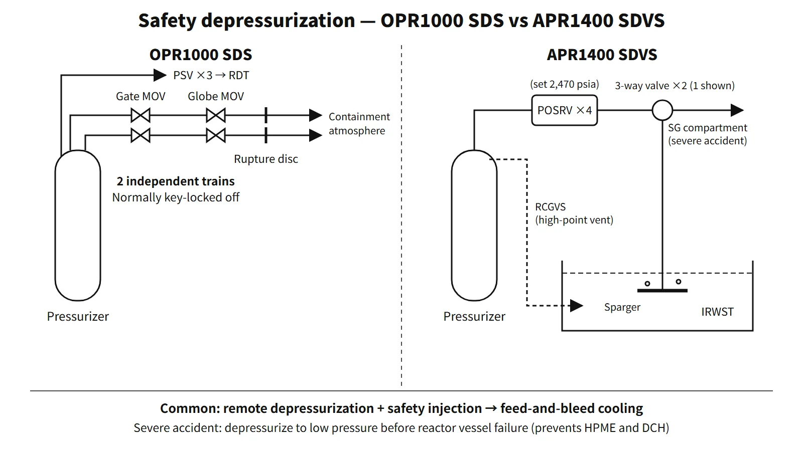

Systems & Equipment · C-SY-005
Safety Depressurization System (SDS) and Safety Depressurization and Vent System (SDVS) — Primary Depressurization for Feed and Bleed and Severe Accidents
Dedicated SDS valve trains, POSRVs with spring and motor pilots, the mass and energy balance of feed and bleed, and severe-accident depressurization before vessel failure.
The safety depressurization system (SDS) lets the operator rapidly depressurize the RCS from the main control room in beyond-design-basis events where heat cannot be removed through the steam generators (such as total loss of feedwater), so that safety injection can enter. In a severe accident it brings the RCS to low pressure before reactor vessel failure, preventing high-pressure melt ejection (HPME) and direct containment heating (DCH). The APR1400 groups this function with high-point venting as the safety depressurization and vent system (SDVS), performed by the pressurizer POSRVs.
Principle and mechanism
Why open the primary side on purpose?
Total loss of feedwater (TLOFW) means that both main and auxiliary feedwater are lost. Without operator action it proceeds as follows.
- Decay heat remains after the reactor trip (low steam generator level)
- The steam generator secondary inventory boils away (dryout) → heat removal from the primary side is lost
- Coolant expansion raises pressurizer level and pressure → the pressurizer safety valves open repeatedly at their setpoint
- The discharges reduce inventory → the core uncovers → cladding temperature rises, with Zr–steam reaction and hydrogen generation
- Core damage with the RCS still at high pressure → risk of HPME and DCH at vessel failure
The high-pressure safety injection (HPSI) pumps may be running, but they cannot inject because RCS pressure is above their shutoff head. The SDS opens the pressurizer steam space to bring pressure below the shutoff head. HPSI can then inject, and the discharged steam and water carry away the decay heat.
OPR1000 SDS — two dedicated valve trains
The OPR1000 is a CE-type design without pressurizer PORVs, so the bleed path is a dedicated system.
- Two nozzles on the pressurizer steam space → two independent lines
- Each train has a motor-operated gate valve (isolation) and a motor-operated globe valve in series, ending in a rupture disc → discharge to the containment atmosphere
- The globe valves are powered from the emergency diesel generators; the gate valves can also be fed with DC through inverters; on failure they stay as is
- To prevent inadvertent opening during normal operation, valve power is removed and key-locked; once power is restored the valves are operated from the main control room
- From the pressurizer nozzle to the globe valve the piping is seismic Category I and Safety Class 1; downstream it is non-safety class
- Sizing basis: the valve capacity is chosen so that, with the HPSI pumps available, opening the SDS after secondary heat removal is lost prevents core uncovery; with fewer pumps or trains available, the valves must be opened earlier
The SDS is not used to mitigate design-basis accidents such as a LOCA, nor for safe shutdown. It discharges hot, high-pressure coolant directly into containment and worsens the equipment environment, so it is used only in beyond-design-basis events.
APR1400 SDVS — the POSRV is both safety valve and depressurization valve
Instead of separate SDS valves, the APR1400 uses four pilot-operated safety relief valves (POSRVs) on top of the pressurizer. The set pressure is 2,470 psia (173.7 kg/cm²A), and the minimum relief capacity per valve is 244.9 t/h of steam (DCD Table 5.4.14-1, as cited in the NRC safety evaluation report). The POSRVs join in pairs into common discharge headers, and two main discharge lines condense the steam through spargers below the water surface of the IRWST.
- Overpressure protection (automatic): two spring-loaded pilots (one pair) + the main valve. Each pilot has a motor-operated isolation valve (normally open; closed remotely if the pilot fails to reclose), the spring pilot, a check valve and a manual isolation valve (locked open; closed for setpoint testing and maintenance)
- Rapid depressurization (operator, remote): two normally closed motor-operated pilot valves in series; the operator must open both to open the main valve. The series arrangement lets one valve isolate if the other fails to close, and they run on emergency DC
The vent function of the SDVS (RCGVS) remotely discharges non-condensable gases and steam from the reactor vessel upper head and the pressurizer steam space to the IRWST. It also controls RCS pressure when pressurizer spray is unavailable. Each path has two normally closed solenoid valves in series, powered from different 1E 125 V DC divisions.
![Left: conceptual scene of four POSRVs on top of the APR1400 pressurizer joining in pairs into two discharge headers, each with a 3-way valve that can divert to the steam generator room in a severe accident, and spargers under the IRWST water. Right: pilot diagram of one POSRV with two parallel spring-pilot lines (motor isolation valve, spring pilot, check valve, manual isolation valve) for automatic overpressure protection and two motor pilots in series for remote rapid depressurization, both acting on one main valve between the pressurizer steam space and the IRWST. Cards: set pressure 2,470 psia (173.7 kg/cm2A, about 17.0 MPa), relief capacity 244.9 t/h per valve, severe-accident depressurization to low pressure before vessel failure (original design: below 200 psig, MDEP)](../../assets/images/concepts/c-sy-005-safety-depressurization-system/fig1-posrv-sdvs-paths.webp)
When feed and bleed works
Two balances must close. At the depressurized equilibrium pressure, injection flow must equal discharge flow to hold inventory (mass), and the enthalpy difference between discharge and injection must carry away all the decay heat (energy). Depressurization means the operator opening the valves manually; it is separate from the automatic overpressure setpoints of the safety valves and POSRVs. For the OPR1000 (2,815 MWt), decay heat 30 minutes after shutdown following one year of operation is about 1.19 % (about 34 MW). Assuming discharge as saturated steam at 7 MPa and injection of 40 °C water, at least about 13 kg/s is needed. If the discharge is two-phase or liquid, more flow is needed. This is an idealized minimum assuming steady state (injection = discharge). A flow balance point alone does not guarantee that the core stays covered, so the inventory trend must also be checked.
![Conceptual plot of mass flow versus RCS pressure: the HPSI injection curve falls to zero at the pump shutoff head, the discharge curve rises with pressure (approximately choked steam flow through a fixed open area), and opening the valves moves the system from the no-injection region near the relief setpoints (PSV 2,500, POSRV 2,470 psia) to the mass balance point where injection equals discharge. Cards give the mass and energy balance equations, the steady-state conditions, and an idealized minimum flow for OPR1000 at 2,815 MWt 30 minutes after shutdown: decay heat 1.19 percent or 33.6 MW, giving 33,600 divided by 2,605 or about 12.9 kg/s (46 t/h)](../../assets/images/concepts/c-sy-005-safety-depressurization-system/fig2-feed-bleed-balance.webp)
Severe-accident depressurization
On entering the SAMG at a core exit temperature of 649 °C, the operator opens the POSRVs to bring the RCS to low pressure before vessel failure (the MDEP description of the original APR1400 design gives a target below 200 psig). Depressurization must also prevent creep failure of the hot legs and steam generator tubes driven by high-pressure natural circulation. In the original design this discharge also went to the IRWST. Because hydrogen could accumulate above the IRWST, later APR1400 designs, including the US-certified design, installed two 3-way valves in the discharge lines. In a severe accident the operator turns them to discharge to the steam generator compartment. Some later units added two trains of dedicated emergency reactor depressurization valves (ERDVs, 449.1 t/h per train) to remove this manual changeover. The depressurization target is a different quantity from the pressure criterion for DCH used in safety analyses.
What it means in a plant
Depressurization means by reactor type
| Item | Westinghouse type | OPR1000 | APR1400 |
|---|---|---|---|
| Bleed device | Pressurizer PORVs + block valves | Dedicated SDS, two trains (gate and globe MOVs) | Four POSRVs (motor pilots) |
| Discharge to | Pressurizer relief tank | Rupture disc → containment atmosphere | IRWST spargers (severe accident: SG compartment or ERDV) |
| Relation to overpressure protection | Separate safety valves | Separate safety valves (three PSVs) | The same valves do both |
| Procedure | Response to loss of secondary heat sink (FR-H.1) | Total loss of feedwater recovery procedure | Feed and bleed, SAMG depressurization |
Once-through (feed-and-bleed) cooling strategy
- Decide to initiate: feedwater cannot be restored + steam generator level falling, or RCS pressure and temperature rising
- Confirm HPSI running (actuate SIAS manually if needed)
- Restore power to the SDS valves and open both trains
- Monitor HPSI flow, core exit temperature, subcooling and pressurizer level
- Keep trying to restore feedwater → once restored, return to steam generator cooling, close the SDS and enter shutdown cooling
The later the valves are opened, the smaller the margin to core uncovery. That is why the sizing basis is stated in terms of how early the valves are opened.
Regulatory and design criteria
For example, in the United States:
| Basis | Key point |
|---|---|
| NUREG-0737 II.B.1, 10 CFR 50.34(f)(2)(vi), 50.46a | High-point vents for the RCS and reactor vessel, remote operation from the main control room, no increase in LOCA probability |
| NUREG-0737 II.D.1 and II.D.3 | Safety and relief valve performance testing, valve position indication |
| SECY-93-087, 10 CFR 52.47(a)(23) | Rapid depressurization capability to prevent HPME in evolutionary LWRs; severe-accident design features |
Easily confused pairs
| POSRV (APR1400) | Pressurizer safety valve (PSV) | Pressurizer PORV (Westinghouse type) | |
|---|---|---|---|
| Actuation | Pilot (spring and motor) | Direct spring | Air or solenoid operated |
| Function | Overpressure protection + rapid depressurization | Overpressure protection | Pressure relief (LTOP as well at some units) |
| Setpoint example | 2,470 psia | 2,500 psia (OPR1000) | Below the safety valves |
| Manual opening | Yes (motor pilots) | No | Yes (with block valves) |
Key points at a glance
- Definition: a system for the operator to depressurize the RCS rapidly and remotely when secondary heat removal is lost, so that safety injection can enter (beyond-design-basis response).
- Functions: (1) decay heat removal by feed and bleed; (2) in a severe accident, depressurization to low pressure before vessel failure → prevents HPME and DCH; (3) prevents high-pressure creep failure; (4) (SDVS) high-point venting.
- OPR1000: two trains from the pressurizer, gate + globe MOVs, rupture disc → containment; power removed and key-locked in normal operation.
- Sizing basis: opened early enough, the SDS together with the available HPSI pumps prevents core uncovery; fewer pumps or trains mean it must be opened earlier.
- APR1400: four POSRVs (2,470 psia, 244.9 t/h each), two spring pilots (automatic) + two motor pilots in series (remote) → IRWST spargers.
- Severe-accident discharge: 3-way valves → SG compartment (later APR1400 designs, US DC); two ERDV trains (some later units).
- Other reactor types: Westinghouse type = PORVs + block valves.
- Caution: not a DBA mitigation system; opening it worsens the containment environment.
